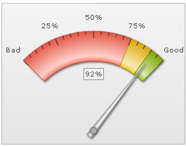
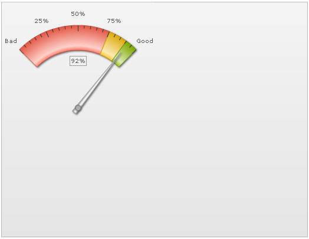
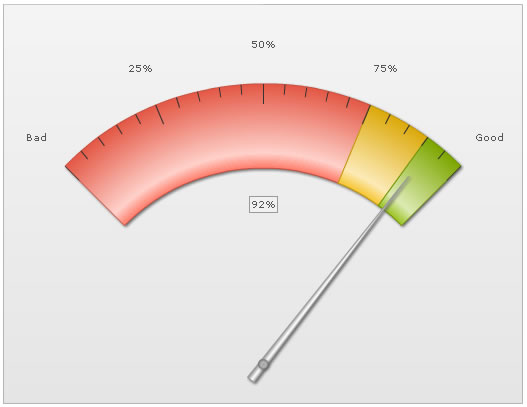

Angular Gauge > Auto-scaling |
FusionWidgets v3 angular gauge allows you to auto-scale various objects in the gauge, when scaling a gauge up/down. For example, consider a chart whose width and height is 260x200 pixels and it uses the following data: |
| <chart lowerLimit='0' upperLimit='100' lowerLimitDisplay='Bad' upperLimitDisplay='Good' gaugeStartAngle='135' gaugeEndAngle='45' gaugeOriginX='130' gaugeOriginY='180' gaugeOuterRadius='140' palette='1' numberSuffix='%' tickValueDistance='20' showValue='1' majorTMHeight='10' minorTMHeight='5'> <colorRange> <color minValue='0' maxValue='75' code='FF654F'/> <color minValue='75' maxValue='90' code='F6BD0F'/> <color minValue='90' maxValue='100' code='8BBA00'/> </colorRange> <dials> <dial value='92' rearExtension='10' valueX='130' valueY='100'/> </dials> <styles> <definition> <style type='font' name='myValueFont' bgColor='F1f1f1' borderColor='999999' /> </definition> <application> <apply toObject='Value' styles='myValueFont' /> </application> </styles> </chart> |
| The above XML renders the following gauge: |
|  |
Here, in this XML, we've manually specified the following:
Let's say, now we want to increase the gauge size by 2, so that width becomes 520 and height 400. If you just increase the width and height of gauge in HTML to 520x400, it will show something as under: |
|  |
As you can see above, the gauge has not scaled itself to occupy the full chart dimensions. This is because our XML still contains co-ordinates/radius for a smaller chart dimension. However, there's a way to instruct the gauge to automatically scale everything that was manually specified. To do so, you would need to set: <chart ... autoScale='1' origW='260' origH='200' ...> Here, we're first asking the chart to auto scale itself. Thereafter, we've specified the original width and height of chart, based on which we had defined the various co-ordinates/radius in XML. When the chart is now rendered with 520x400 dimensions, it now checks the current dimension against the original width and height specified (in XML), and then scales everything (that was manually specified in the XML) accordingly. The result would now look as under: |
|  |
As you can see above, the chart has scaled:
Additionally, had you specified manual values for any of the gauge elements listed below, they would have been auto-scaled:
As such, you can always be sure that when you're resizing your gauge in constrained proportion, with manually specified values for any of the above elements, FusionWidgets angular gauge can easily scale things for you. Please note that this auto scaling works perfectly only for constrained resizing i.e., both width and height being multipled by the same factor. If the chart is not scaled in proportions, the gauge will scale in the least possible proportion and then leave empty space at right/bottom. In a similar way, the annotations present in the gauge can also be scaled. Please see the section Annotations > Auto-scaling to see how to auto-scale annotations. |